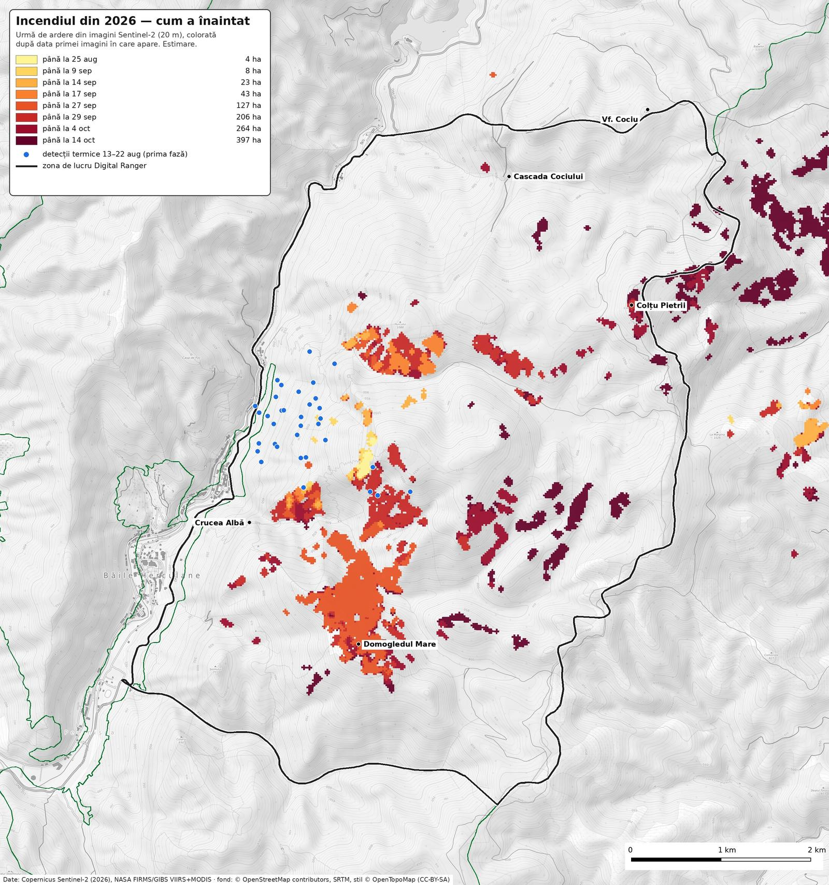
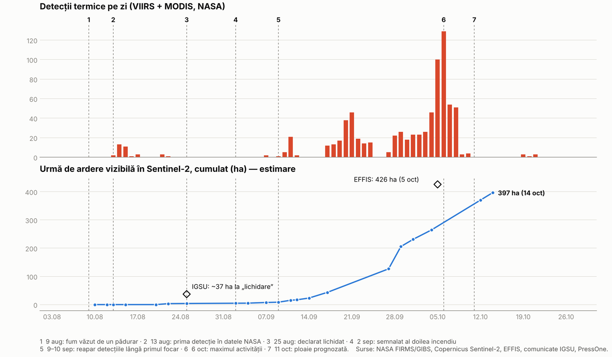

Cronologie
| Moment | Ce s-a întâmplat | Sursă |
|---|---|---|
| 9 august | Un pădurar vede fum pe creastă, într-un loc la care oamenii și materialele necesare nu puteau ajunge | PressOne, teren |
| 11–13 august | Prima înregistrare din satelit: 11 august seara la EFFIS, 13 august în datele NASA FIRMS | EFFIS, NASA FIRMS |
| 25 august | Incendiul e declarat lichidat, la circa 37 ha | comunicat IGSU |
| 23 august – 9 septembrie | Nicio detecție termică în zona focarului; focul mocnește în litieră | NASA FIRMS |
| 2 septembrie | E semnalat „al doilea incendiu”, în aceeași zonă | comunicat IGSU |
| 9–10 septembrie | Detecțiile reapar la mai puțin de 500 m de cele din august | NASA FIRMS |
| 17 septembrie – 14 octombrie | Urma vizibilă crește de la 43 ha la 397 ha, din care 298 ha în zona-pilot | Sentinel-2, prelucrare proprie |
| 6 octombrie | Maximul: 129 de detecții termice într-o singură zi | NASA FIRMS |


Cât și unde a ars
Suprafața finală e confirmată din trei surse: 397 ha în estimarea proprie, 426 ha la EFFIS, circa 400 ha la ocolul silvic. Estimarea din satelit depinde de pragul ales și poate varia între circa 230 și 710 ha; 397 ha este valoarea centrală.
Unde a ars. Din cele 397 ha, 298 ha sunt în zona-pilot: aproximativ 216 ha (73%) în zona de protecție strictă, 8 ha în protecție integrală și circa 73 ha în conservare durabilă (zonarea din PMI 2025). Restul, aproape 100 ha, se află dincolo de limita estică a parcului, spre comuna Podeni; rămâne de verificat dacă e același incendiu.

Ce trebuie să funcționeze data viitoare
Observațiile vin din teren, din timpul intervenției. Sunt formulate ca cerințe pentru data viitoare, nu ca reproșuri.
- Primele zile. Focul a fost văzut din prima zi de pădurarul din zonă. Primele zile contează cel mai mult; atunci trebuie să existe acces, apă și oameni gata de plecare.
- Accesul. Apa, echipamentul și oamenii au ajuns greu la foc. Drumurile vechi cartate și rezervoarele de pe culmi răspund direct acestei probleme.
- Mocnirea. Datele termice arată că focul a mocnit în litieră 18 zile, fără să fie văzut de sus, apoi a reapărut în aceeași zonă. Propunerea: o verificare cu termoviziune înainte de încheierea intervenției.
- Efectivele. Au fost zile cu prea puțini oameni și zile cu resurse de prisos. Un jurnal comun zilnic face efectivele vizibile pentru toate instituțiile.
- Coordonarea. Parcul, Romsilva, IGSU și Salvamont au lucrat zilnic în teren fără o hartă și o evidență comune.
Ce au putut și ce nu au putut sateliții gratuiți
Au documentat bine incendiul după ce s-a întâmplat: progresia zi cu zi, suprafața, intensitatea. Nu au avertizat înaintea pădurarului. Nu au văzut cele 18 zile de mocnire în litieră. În faza din august au arătat sub 5 ha, față de circa 37 ha la sol.
Incendiile anterioare
După memoria administrației, zona a mai ars în 2000, 2003, 2008, 2013 și 2018. Acești ani nu sunt încă confirmați din evidențe (parc, ocol silvic, EFFIS); verificarea lor face parte din pilot.
Surse: imagini Copernicus Sentinel-2; detecții termice NASA FIRMS (VIIRS, MODIS); poligoane de suprafață arsă EFFIS; comunicatul IGSU din octombrie; Euronews România. Prelucrare proprie, noiembrie 2026.